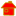
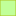
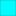

<!doctype html>
<html lang="en">
    <head>
        <meta charset="utf-8">
        <meta http-equiv="X-UA-Compatible" content="IE=edge">
        <meta name="viewport" content="initial-scale=1,user-scalable=no,maximum-scale=1,width=device-width">
        <meta name="mobile-web-app-capable" content="yes">
        <meta name="apple-mobile-web-app-capable" content="yes">
        <link rel="stylesheet" href="css/leaflet.css">
        <link rel="stylesheet" href="css/qgis2web.css"><link rel="stylesheet" href="css/fontawesome-all.min.css">
        <style>
        #map {
            width: 1221px;
            height: 852px;
        }
        </style>
        <title>Cartographie touristique du parc national des pyrénnées</title>
    </head>
    <body>
        <div id="map">
        </div>
        <script src="js/qgis2web_expressions.js"></script>
        <script src="js/leaflet.js"></script>
        <script src="js/multi-style-layer.js"></script>
        <script src="js/leaflet.rotatedMarker.js"></script>
        <script src="js/leaflet.pattern.js"></script>
        <script src="js/leaflet-hash.js"></script>
        <script src="js/Autolinker.min.js"></script>
        <script src="js/rbush.min.js"></script>
        <script src="js/labelgun.min.js"></script>
        <script src="js/labels.js"></script>
        <script src="data/PNP_plans_eau_0.js"></script>
        <script src="data/PNP_zone_optimale_adhesion_1.js"></script>
        <script src="data/PNP_zone_adhesion_2.js"></script>
        <script src="data/PNP_zone_coeur_3.js"></script>
        <script src="data/PNP_sentiers_4.js"></script>
        <script src="data/PNP_maisons_du_parc_5.js"></script>
        <script src="data/PNP_refuges_6.js"></script>
        <script src="data/PNP_secteurs_7.js"></script>
        <script>
        var map = L.map('map', {
            zoomControl:true, maxZoom:28, minZoom:1
        }).fitBounds([[42.64189501470264,-1.3407287165024497],[43.538402723720075,0.360044799965916]]);
        var hash = new L.Hash(map);
        map.attributionControl.setPrefix('<a href="https://github.com/tomchadwin/qgis2web" target="_blank">qgis2web</a> &middot; <a href="https://leafletjs.com" title="A JS library for interactive maps">Leaflet</a> &middot; <a href="https://qgis.org">QGIS</a>');
        var autolinker = new Autolinker({truncate: {length: 30, location: 'smart'}});
        var bounds_group = new L.featureGroup([]);
        function setBounds() {
        }
        function pop_PNP_plans_eau_0(feature, layer) {
        }

        function style_PNP_plans_eau_0_0() {
            return {
                pane: 'pane_PNP_plans_eau_0',
                opacity: 1,
                color: 'rgba(0,195,195,1.0)',
                dashArray: '',
                lineCap: 'butt',
                lineJoin: 'miter',
                weight: 1.0, 
                fill: true,
                fillOpacity: 1,
                fillColor: 'rgba(0,251,255,1.0)',
                interactive: true,
            }
        }
        map.createPane('pane_PNP_plans_eau_0');
        map.getPane('pane_PNP_plans_eau_0').style.zIndex = 400;
        map.getPane('pane_PNP_plans_eau_0').style['mix-blend-mode'] = 'normal';
        var layer_PNP_plans_eau_0 = new L.geoJson(json_PNP_plans_eau_0, {
            attribution: '',
            interactive: true,
            dataVar: 'json_PNP_plans_eau_0',
            layerName: 'layer_PNP_plans_eau_0',
            pane: 'pane_PNP_plans_eau_0',
            onEachFeature: pop_PNP_plans_eau_0,
            style: style_PNP_plans_eau_0_0,
        });
        bounds_group.addLayer(layer_PNP_plans_eau_0);
        map.addLayer(layer_PNP_plans_eau_0);
        function pop_PNP_zone_optimale_adhesion_1(feature, layer) {
            var popupContent = '<table>\
                    <tr>\
                        <td colspan="2">' + (feature.properties['ID'] !== null ? autolinker.link(feature.properties['ID'].toLocaleString()) : '') + '</td>\
                    </tr>\
                    <tr>\
                        <td colspan="2">' + (feature.properties['Libellé'] !== null ? autolinker.link(feature.properties['Libellé'].toLocaleString()) : '') + '</td>\
                    </tr>\
                </table>';
            layer.bindPopup(popupContent, {maxHeight: 400});
        }

        function style_PNP_zone_optimale_adhesion_1_0() {
            return {
                pane: 'pane_PNP_zone_optimale_adhesion_1',
                opacity: 1,
                color: 'rgba(171,193,26,1.0)',
                dashArray: '',
                lineCap: 'butt',
                lineJoin: 'miter',
                weight: 1.0, 
                fill: true,
                fillOpacity: 1,
                fillColor: 'rgba(133,255,52,0.5019607843137255)',
                interactive: true,
            }
        }
        map.createPane('pane_PNP_zone_optimale_adhesion_1');
        map.getPane('pane_PNP_zone_optimale_adhesion_1').style.zIndex = 401;
        map.getPane('pane_PNP_zone_optimale_adhesion_1').style['mix-blend-mode'] = 'normal';
        var layer_PNP_zone_optimale_adhesion_1 = new L.geoJson(json_PNP_zone_optimale_adhesion_1, {
            attribution: '',
            interactive: true,
            dataVar: 'json_PNP_zone_optimale_adhesion_1',
            layerName: 'layer_PNP_zone_optimale_adhesion_1',
            pane: 'pane_PNP_zone_optimale_adhesion_1',
            onEachFeature: pop_PNP_zone_optimale_adhesion_1,
            style: style_PNP_zone_optimale_adhesion_1_0,
        });
        bounds_group.addLayer(layer_PNP_zone_optimale_adhesion_1);
        map.addLayer(layer_PNP_zone_optimale_adhesion_1);
        function pop_PNP_zone_adhesion_2(feature, layer) {
            var popupContent = '<table>\
                    <tr>\
                        <td colspan="2">' + (feature.properties['id'] !== null ? autolinker.link(feature.properties['id'].toLocaleString()) : '') + '</td>\
                    </tr>\
                    <tr>\
                        <td colspan="2">' + (feature.properties['nom'] !== null ? autolinker.link(feature.properties['nom'].toLocaleString()) : '') + '</td>\
                    </tr>\
                </table>';
            layer.bindPopup(popupContent, {maxHeight: 400});
        }

        function style_PNP_zone_adhesion_2_0() {
            return {
                pane: 'pane_PNP_zone_adhesion_2',
                opacity: 1,
                color: 'rgba(56,128,54,1.0)',
                dashArray: '',
                lineCap: 'butt',
                lineJoin: 'miter',
                weight: 1.0, 
                fill: true,
                fillOpacity: 1,
                fillColor: 'rgba(77,175,74,0.5058823529411764)',
                interactive: true,
            }
        }
        map.createPane('pane_PNP_zone_adhesion_2');
        map.getPane('pane_PNP_zone_adhesion_2').style.zIndex = 402;
        map.getPane('pane_PNP_zone_adhesion_2').style['mix-blend-mode'] = 'normal';
        var layer_PNP_zone_adhesion_2 = new L.geoJson(json_PNP_zone_adhesion_2, {
            attribution: '',
            interactive: true,
            dataVar: 'json_PNP_zone_adhesion_2',
            layerName: 'layer_PNP_zone_adhesion_2',
            pane: 'pane_PNP_zone_adhesion_2',
            onEachFeature: pop_PNP_zone_adhesion_2,
            style: style_PNP_zone_adhesion_2_0,
        });
        bounds_group.addLayer(layer_PNP_zone_adhesion_2);
        map.addLayer(layer_PNP_zone_adhesion_2);
        function pop_PNP_zone_coeur_3(feature, layer) {
            var popupContent = '<table>\
                    <tr>\
                        <td colspan="2">' + (feature.properties['id'] !== null ? autolinker.link(feature.properties['id'].toLocaleString()) : '') + '</td>\
                    </tr>\
                    <tr>\
                        <td colspan="2">' + (feature.properties['nom'] !== null ? autolinker.link(feature.properties['nom'].toLocaleString()) : '') + '</td>\
                    </tr>\
                </table>';
            layer.bindPopup(popupContent, {maxHeight: 400});
        }

        function style_PNP_zone_coeur_3_0() {
            return {
                pane: 'pane_PNP_zone_coeur_3',
                opacity: 1,
                color: 'rgba(255,0,54,1.0)',
                dashArray: '10,5',
                lineCap: 'butt',
                lineJoin: 'miter',
                weight: 2.0, 
                fill: true,
                fillOpacity: 1,
                fillColor: 'rgba(77,145,0,0.5019607843137255)',
                interactive: true,
            }
        }
        map.createPane('pane_PNP_zone_coeur_3');
        map.getPane('pane_PNP_zone_coeur_3').style.zIndex = 403;
        map.getPane('pane_PNP_zone_coeur_3').style['mix-blend-mode'] = 'normal';
        var layer_PNP_zone_coeur_3 = new L.geoJson(json_PNP_zone_coeur_3, {
            attribution: '',
            interactive: true,
            dataVar: 'json_PNP_zone_coeur_3',
            layerName: 'layer_PNP_zone_coeur_3',
            pane: 'pane_PNP_zone_coeur_3',
            onEachFeature: pop_PNP_zone_coeur_3,
            style: style_PNP_zone_coeur_3_0,
        });
        bounds_group.addLayer(layer_PNP_zone_coeur_3);
        map.addLayer(layer_PNP_zone_coeur_3);
        function pop_PNP_sentiers_4(feature, layer) {
            var popupContent = '<table>\
                    <tr>\
                        <td colspan="2">' + (feature.properties['IDPNP'] !== null ? autolinker.link(feature.properties['IDPNP'].toLocaleString()) : '') + '</td>\
                    </tr>\
                </table>';
            layer.bindPopup(popupContent, {maxHeight: 400});
        }

        function style_PNP_sentiers_4_0() {
            return {
                pane: 'pane_PNP_sentiers_4',
                opacity: 1,
                color: 'rgba(0,0,0,1.0)',
                dashArray: '',
                lineCap: 'round',
                lineJoin: 'round',
                weight: 1.0,
                fillOpacity: 0,
                interactive: true,
            }
        }
        function style_PNP_sentiers_4_1() {
            return {
                pane: 'pane_PNP_sentiers_4',
                opacity: 1,
                color: 'rgba(255,255,255,1.0)',
                dashArray: '',
                lineCap: 'round',
                lineJoin: 'round',
                weight: 1.0,
                fillOpacity: 0,
                interactive: true,
            }
        }
        map.createPane('pane_PNP_sentiers_4');
        map.getPane('pane_PNP_sentiers_4').style.zIndex = 404;
        map.getPane('pane_PNP_sentiers_4').style['mix-blend-mode'] = 'normal';
        var layer_PNP_sentiers_4 = new L.geoJson.multiStyle(json_PNP_sentiers_4, {
            attribution: '',
            interactive: true,
            dataVar: 'json_PNP_sentiers_4',
            layerName: 'layer_PNP_sentiers_4',
            pane: 'pane_PNP_sentiers_4',
            onEachFeature: pop_PNP_sentiers_4,
            styles: [style_PNP_sentiers_4_0,style_PNP_sentiers_4_1,]
        });
        bounds_group.addLayer(layer_PNP_sentiers_4);
        map.addLayer(layer_PNP_sentiers_4);
        function pop_PNP_maisons_du_parc_5(feature, layer) {
            var popupContent = '<table>\
                    <tr>\
                        <td colspan="2">' + (feature.properties['Nom'] !== null ? autolinker.link(feature.properties['Nom'].toLocaleString()) : '') + '</td>\
                    </tr>\
                </table>';
            layer.bindPopup(popupContent, {maxHeight: 400});
        }

        function style_PNP_maisons_du_parc_5_0() {
            return {
                pane: 'pane_PNP_maisons_du_parc_5',
        rotationAngle: 0.0,
        rotationOrigin: 'center center',
        icon: L.icon({
            iconUrl: 'markers/tourist_museum.svg',
            iconSize: [19.0, 19.0]
        }),
                interactive: true,
            }
        }
        map.createPane('pane_PNP_maisons_du_parc_5');
        map.getPane('pane_PNP_maisons_du_parc_5').style.zIndex = 405;
        map.getPane('pane_PNP_maisons_du_parc_5').style['mix-blend-mode'] = 'normal';
        var layer_PNP_maisons_du_parc_5 = new L.geoJson(json_PNP_maisons_du_parc_5, {
            attribution: '',
            interactive: true,
            dataVar: 'json_PNP_maisons_du_parc_5',
            layerName: 'layer_PNP_maisons_du_parc_5',
            pane: 'pane_PNP_maisons_du_parc_5',
            onEachFeature: pop_PNP_maisons_du_parc_5,
            pointToLayer: function (feature, latlng) {
                var context = {
                    feature: feature,
                    variables: {}
                };
                return L.marker(latlng, style_PNP_maisons_du_parc_5_0(feature));
            },
        });
        bounds_group.addLayer(layer_PNP_maisons_du_parc_5);
        map.addLayer(layer_PNP_maisons_du_parc_5);
        function pop_PNP_refuges_6(feature, layer) {
            var popupContent = '<table>\
                    <tr>\
                        <td colspan="2">' + (feature.properties['Type'] !== null ? autolinker.link(feature.properties['Type'].toLocaleString()) : '') + '</td>\
                    </tr>\
                    <tr>\
                        <td colspan="2">' + (feature.properties['Propriete'] !== null ? autolinker.link(feature.properties['Propriete'].toLocaleString()) : '') + '</td>\
                    </tr>\
                    <tr>\
                        <td colspan="2">' + (feature.properties['Nom'] !== null ? autolinker.link(feature.properties['Nom'].toLocaleString()) : '') + '</td>\
                    </tr>\
                </table>';
            layer.bindPopup(popupContent, {maxHeight: 400});
        }

        function style_PNP_refuges_6_0() {
            return {
                pane: 'pane_PNP_refuges_6',
        rotationAngle: 0.0,
        rotationOrigin: 'center center',
        icon: L.icon({
            iconUrl: 'markers/house.svg',
            iconSize: [19.0, 19.0]
        }),
                interactive: true,
            }
        }
        map.createPane('pane_PNP_refuges_6');
        map.getPane('pane_PNP_refuges_6').style.zIndex = 406;
        map.getPane('pane_PNP_refuges_6').style['mix-blend-mode'] = 'normal';
        var layer_PNP_refuges_6 = new L.geoJson(json_PNP_refuges_6, {
            attribution: '',
            interactive: true,
            dataVar: 'json_PNP_refuges_6',
            layerName: 'layer_PNP_refuges_6',
            pane: 'pane_PNP_refuges_6',
            onEachFeature: pop_PNP_refuges_6,
            pointToLayer: function (feature, latlng) {
                var context = {
                    feature: feature,
                    variables: {}
                };
                return L.marker(latlng, style_PNP_refuges_6_0(feature));
            },
        });
        bounds_group.addLayer(layer_PNP_refuges_6);
        map.addLayer(layer_PNP_refuges_6);
        function pop_PNP_secteurs_7(feature, layer) {
            var popupContent = '<table>\
                    <tr>\
                        <td colspan="2">' + (feature.properties['ID'] !== null ? autolinker.link(feature.properties['ID'].toLocaleString()) : '') + '</td>\
                    </tr>\
                    <tr>\
                        <td colspan="2">' + (feature.properties['Nom'] !== null ? autolinker.link(feature.properties['Nom'].toLocaleString()) : '') + '</td>\
                    </tr>\
                </table>';
            layer.bindPopup(popupContent, {maxHeight: 400});
        }

        function style_PNP_secteurs_7_0() {
            return {
                pane: 'pane_PNP_secteurs_7',
                opacity: 1,
                color: 'rgba(0,0,0,1.0)',
                dashArray: '1,5',
                lineCap: 'butt',
                lineJoin: 'miter',
                weight: 1.0, 
                fill: true,
                fillOpacity: 1,
                fillColor: 'rgba(255,158,23,0.0)',
                interactive: true,
            }
        }
        map.createPane('pane_PNP_secteurs_7');
        map.getPane('pane_PNP_secteurs_7').style.zIndex = 407;
        map.getPane('pane_PNP_secteurs_7').style['mix-blend-mode'] = 'normal';
        var layer_PNP_secteurs_7 = new L.geoJson(json_PNP_secteurs_7, {
            attribution: '',
            interactive: true,
            dataVar: 'json_PNP_secteurs_7',
            layerName: 'layer_PNP_secteurs_7',
            pane: 'pane_PNP_secteurs_7',
            onEachFeature: pop_PNP_secteurs_7,
            style: style_PNP_secteurs_7_0,
        });
        bounds_group.addLayer(layer_PNP_secteurs_7);
        map.addLayer(layer_PNP_secteurs_7);
            var title = new L.Control();
            title.onAdd = function (map) {
                this._div = L.DomUtil.create('div', 'info');
                this.update();
                return this._div;
            };
            title.update = function () {
                this._div.innerHTML = '<h2>Cartographie touristique du parc national des pyrénnées</h2>';
            };
            title.addTo(map);
        var baseMaps = {};
        L.control.layers(baseMaps,{' PNP_secteurs': layer_PNP_secteurs_7,' PNP_refuges': layer_PNP_refuges_6,' PNP_maisons_du_parc': layer_PNP_maisons_du_parc_5,' PNP_sentiers': layer_PNP_sentiers_4,' PNP_zone_coeur': layer_PNP_zone_coeur_3,' PNP_zone_adhesion': layer_PNP_zone_adhesion_2,' PNP_zone_optimale_adhesion': layer_PNP_zone_optimale_adhesion_1,' PNP_plans_eau': layer_PNP_plans_eau_0,}).addTo(map);
        setBounds();
        </script>
    </body>
</html>
